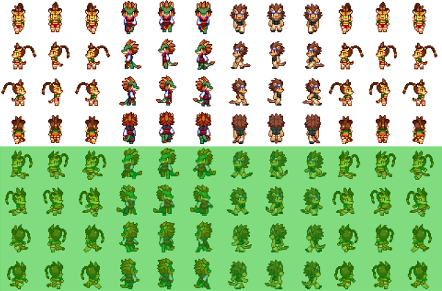
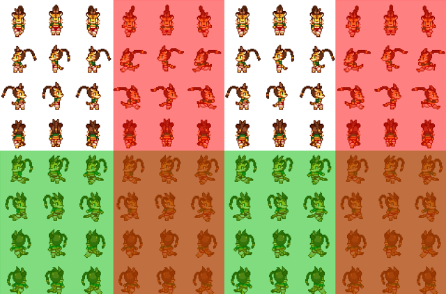
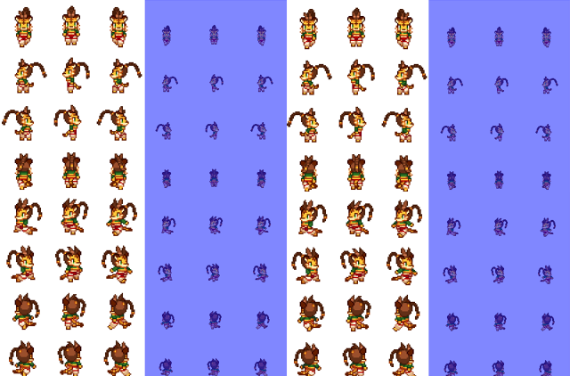
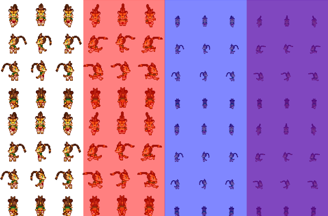
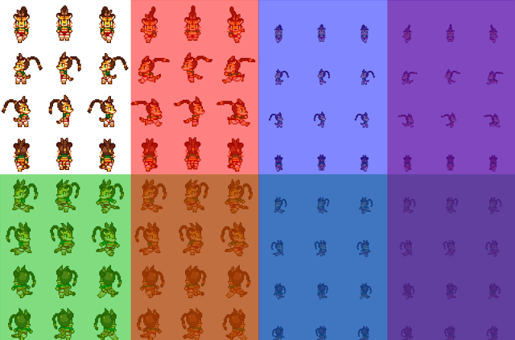

パターン配置解説
・まずはじめに
PD_8DirDash及びPD_AdjustCharaSpriteでは
ファイル名の一番後ろのアンダーバーより後ろに特定の文字が含まれるかどうかでグラフィック変更を行うかを決定しています。
例：「Char01_QD.png」→斜め移動とダッシュ時の専用グラフィックが存在
特定文字が含まれていても最後のアンダーバーより手前の場合は判定されません。
例：「Char01_D_Q .png」→斜め移動の専用グラフィックが存在（「D」は判定に含まれない）
ファイル名によっては意図せず専用グラフィック判定に引っかかってしまう可能性があります。
判定文字はすべて大文字なので、なるべく判定部分以外で大文字アルファベットを使用しないようにしてください。
例：「Char01_Danger.png」→ダッシュ時の専用グラフィックが存在と誤判定される
例：「char01_danger.png」→誤判定されない
・8方向移動（PD_8DirDash）
ファイル名の末尾に「Q」が含まれる場合、歩行グラフィックセットの下半分が
歩行グラフィックの上半分の斜め移動グラフィックとして扱われます。
（画像の緑の部分）

斜めグラフィックの配置はWOLF RPGエディターと同様となっています。
テンキー表示で番号が若い順で覚えるとわかりやすいかもしれません。
1ファイルに配置できるキャラクターは4体になります。
なお、ツクールの使用上エディタ上から下半分をイベントや主人公等の歩行グラフィックとして設定可能ですが
表示がおかしくなる可能性が高いため非推奨となっております。
これに関しては以降すべての特殊歩行グラフィックに関して共通です。
・ダッシュ移動（PD_8DirDash）
ファイル名の末尾に「D」が含まれる場合、右隣の歩行グラフィックが
ダッシュ時のグラフィックとして扱われます。
（画像の赤い部分）

1ファイルに配置できるキャラクターは4体になります。
斜め移動と併用した場合はこのようになります。
（画像の緑の部分が斜め移動グラフィック、赤い部分がダッシュ用グラフィック、
重なっている部分は斜めダッシュグラフィック）

1ファイルに配置できるキャラクターは2体になります。
・フィールド用グラフィック（PD_AdjustCharaSprite）
ファイル名の末尾に「F」が含まれる場合、右隣の歩行グラフィックが
フィールド画面でのグラフィックとして扱われます。
（画像の青い部分）

1ファイルに配置できるキャラクターは4体になります。
ただし、「D」と同時に使用する場合は2列目がダッシュグラフィック、3列目がフィールドグラフィックになります。
また、4列目はフィールド上でダッシュした際のグラフィックになります。

すべてのグラフィック変更を併用する場合はこのようになります。
（右上からZ字型に、通常、ダッシュ、フィールド上、フィールド上でダッシュ、
斜め、斜めダッシュ、フィールド上斜め移動、フィールド上斜めダッシュ）

1ファイルに配置できるキャラクターは1体になります。
ここまで作る人居るんだろうか